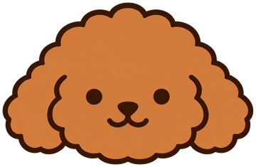

トイプードルのムックと、後悔なく過ごすために
クイズわんこ○×クイズ
寿命・年齢・お金のこと、知ってる？
※ 答えと解説は、公的な資料や調査・研究で確かめた数字をもとにしています。数字は平均などの目安で、一頭一頭の体質や暮らしによってちがいます。

トイプードルのムックと、後悔なく過ごすために
クイズ寿命・年齢・お金のこと、知ってる？
※ 答えと解説は、公的な資料や調査・研究で確かめた数字をもとにしています。数字は平均などの目安で、一頭一頭の体質や暮らしによってちがいます。